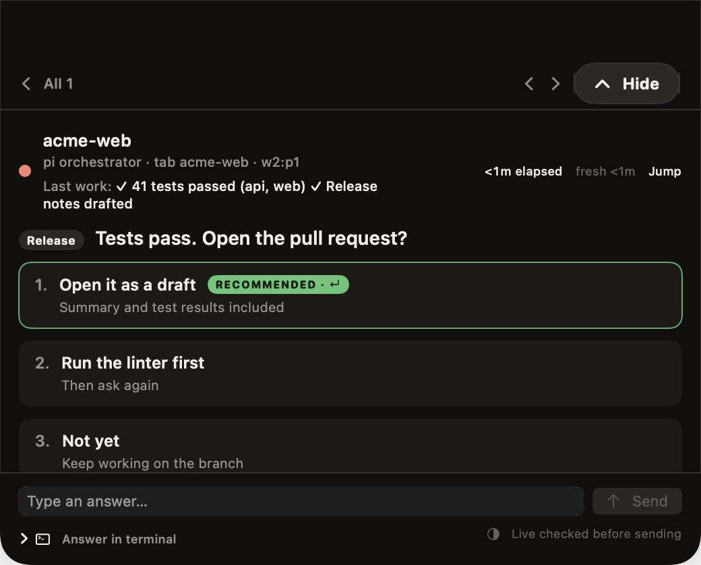
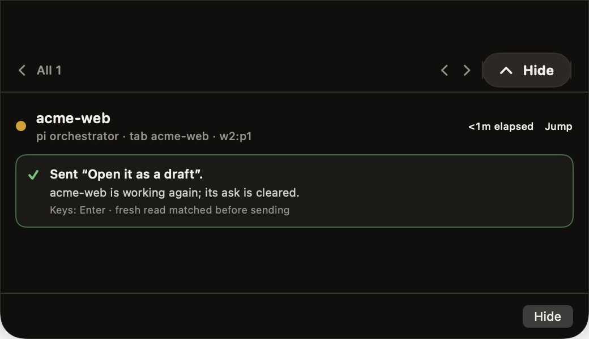

See who needs you without looking for it.
A thin line under the notch shows how your agents are doing. Coral means one is waiting for you. Amber means they're working. Hover to see how many.
Waiting for you
Working
For coding agents, on your MacBook
The question shows up in your MacBook notch. Answer it there and your agent gets back to work. You never leave the window you're in.
FreemacOS 14 or laterApple Siliconherdr optional
On a phone? Open this page on your Mac to install.
Before and after
A thin line under the notch shows how your agents are doing. Coral means one is waiting for you. Amber means they're working. Hover to see how many.
You see the question, what the agent just finished, and its choices, with the recommended answer marked. If none of the choices fit, type your own. If you'd rather answer in the terminal, Jump takes you to the exact tab.

It never answers for you. Before sending, it checks the terminal again. If the question has changed, nothing is sent. Afterwards you get a short receipt saying what was sent and that the agent is working again.

Before you download
notch-agent launcher. Plain, unwrapped terminal processes aren't automatically attached.Questions
No. Every answer comes from you. Risky questions, like deploying to production or deleting data, ask you to type the target name before anything is sent.
pi, Claude Code and Codex work through the bundled native launcher, without herdr. Existing herdr sessions are supported too. Anything that cannot be answered safely stays in its owning terminal; OpenCode and Grok are status-only through herdr. Unwrapped terminal processes are not automatically discovered.
With pi, only the lead agent's questions come to you. Questions a helper asks its lead stay with the lead, so your notch doesn't fill up.
Yes. Add the machine's SSH name in Settings. It uses your existing SSH setup and needs a key that works without a password prompt.
Native launchers are included in the app. Optional pi extension setup shows you the file and asks before changing ~/.pi/agent/extensions. Launch at login is off unless you turn it on. Notifications are optional.
The download is signed with a Developer ID and notarized by Apple, so macOS opens it after its usual check for downloaded apps. It's a direct download, not from the Mac App Store.
No. Opt in to automatic update checks once, or use Check for Updates in the app. Sparkle handles the download and installation; you choose Install & Relaunch or Later. You do not need to replace the app by hand for each release.
Nothing. It's a free download, with no account to create.
Unstall is the app's name now. If your copy still shows Notch Agent in Finder or the menu bar, use Check for Updates in the app (or download it again) to move to the renamed build.
FreemacOS 14+Apple Siliconherdr optional